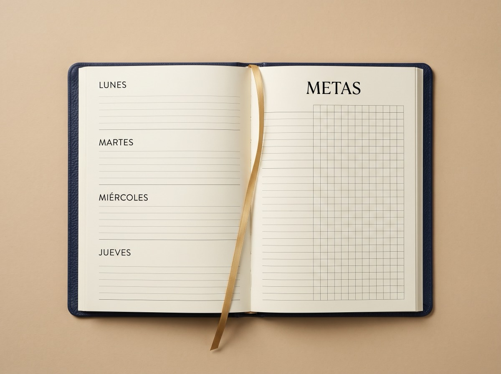
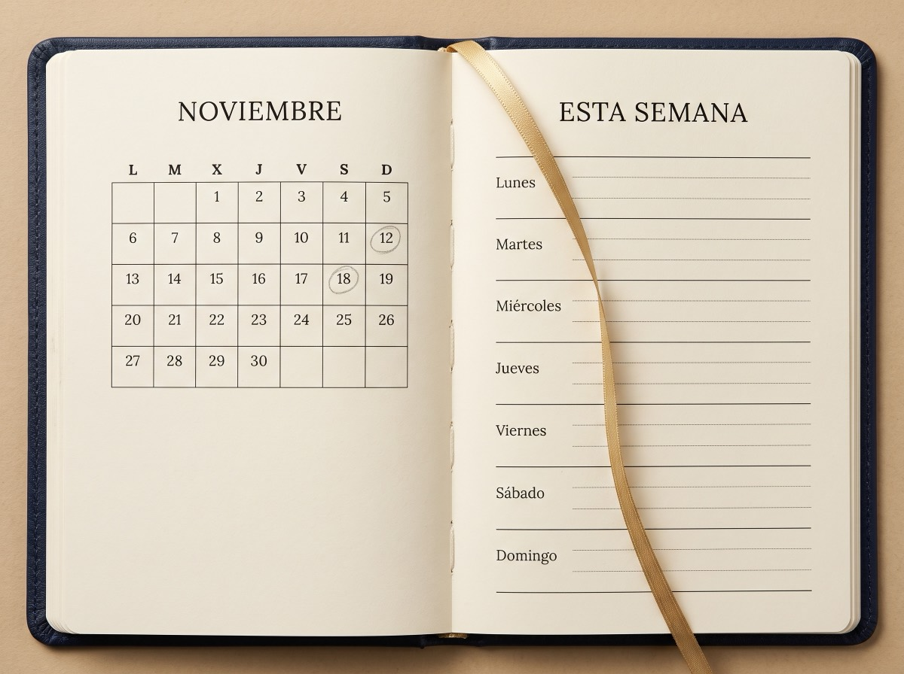
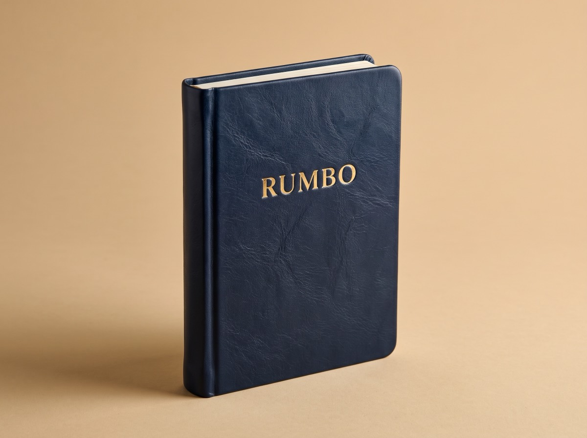

Planifica tus metas de carrera, haz seguimiento de tus hábitos y organiza tu semana — en papel, sin apps, sin nada que configurar antes de empezar.
$42 pago único · envío incluido · recibe gratis la página 1 en PDF
No es una lista de funciones — es lo que de verdad pasa cada mañana cuando la abres. Sigue bajando.
En positivo y verificables: sabrás exactamente cuándo las lograste, no solo que "lo intentaste".
Una cuadrícula para marcar lo que sí hiciste esta semana — constancia visible, no solo intención.
Vista de semana para el día a día, vista de mes para no perder el panorama completo.
Preguntas ya impresas al cierre de cada semana: qué aprendí, qué ajusto para la siguiente.

01 · MetasEn positivo y verificables: sabrás exactamente cuándo las lograste, no solo que "lo intentaste".
Una cuadrícula para marcar lo que sí hiciste esta semana — constancia visible, no solo intención.

03 · CalendarioVista de semana para el día a día, vista de mes para no perder el panorama completo.
Preguntas ya impresas al cierre de cada semana: qué aprendí, qué ajusto para la siguiente.
Mismo papel, mismo método — el color que vas a ver cada mañana en tu escritorio.

Azul marino profundo, el tono de lanzamiento — serio, nada corporativo-frío.
Rumbo está por lanzarse. En cuanto lleguen las primeras entregas, aquí van a aparecer experiencias reales de quienes la usaron — con nombre, sin caras inventadas.